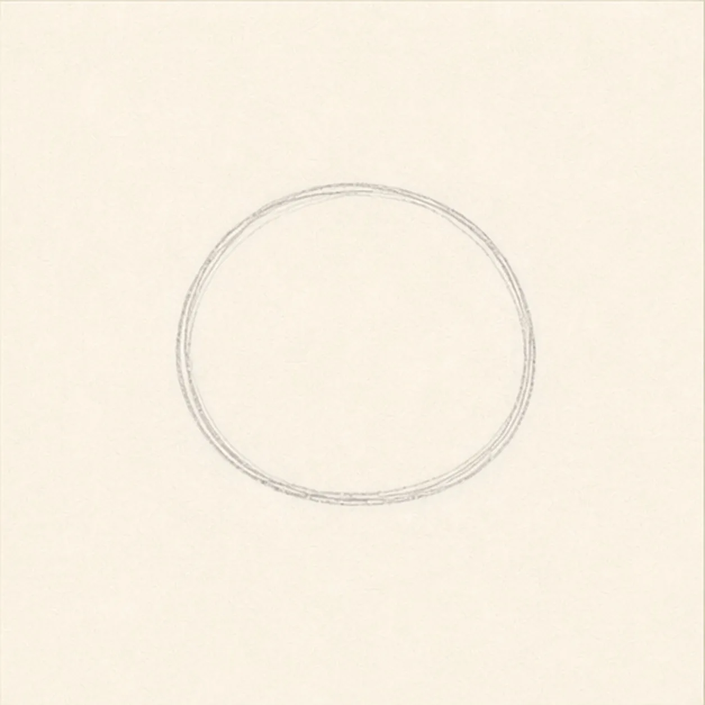
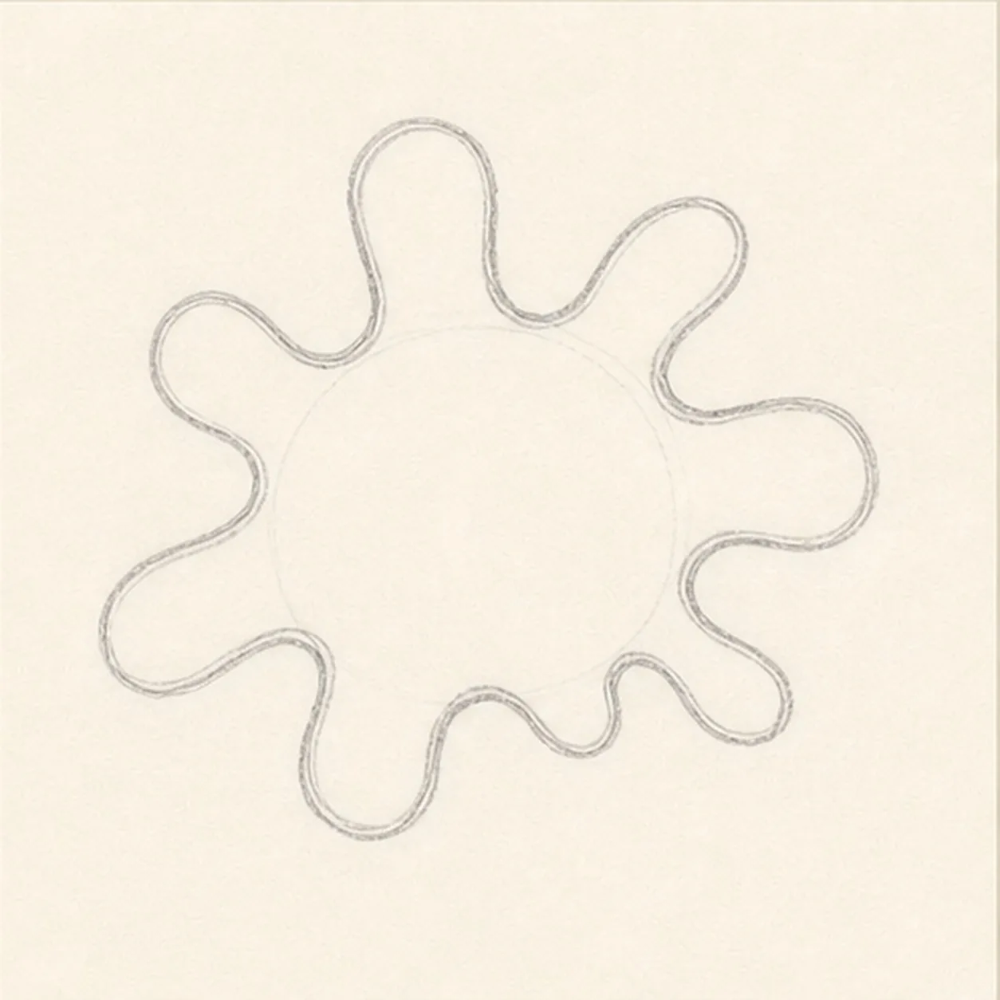
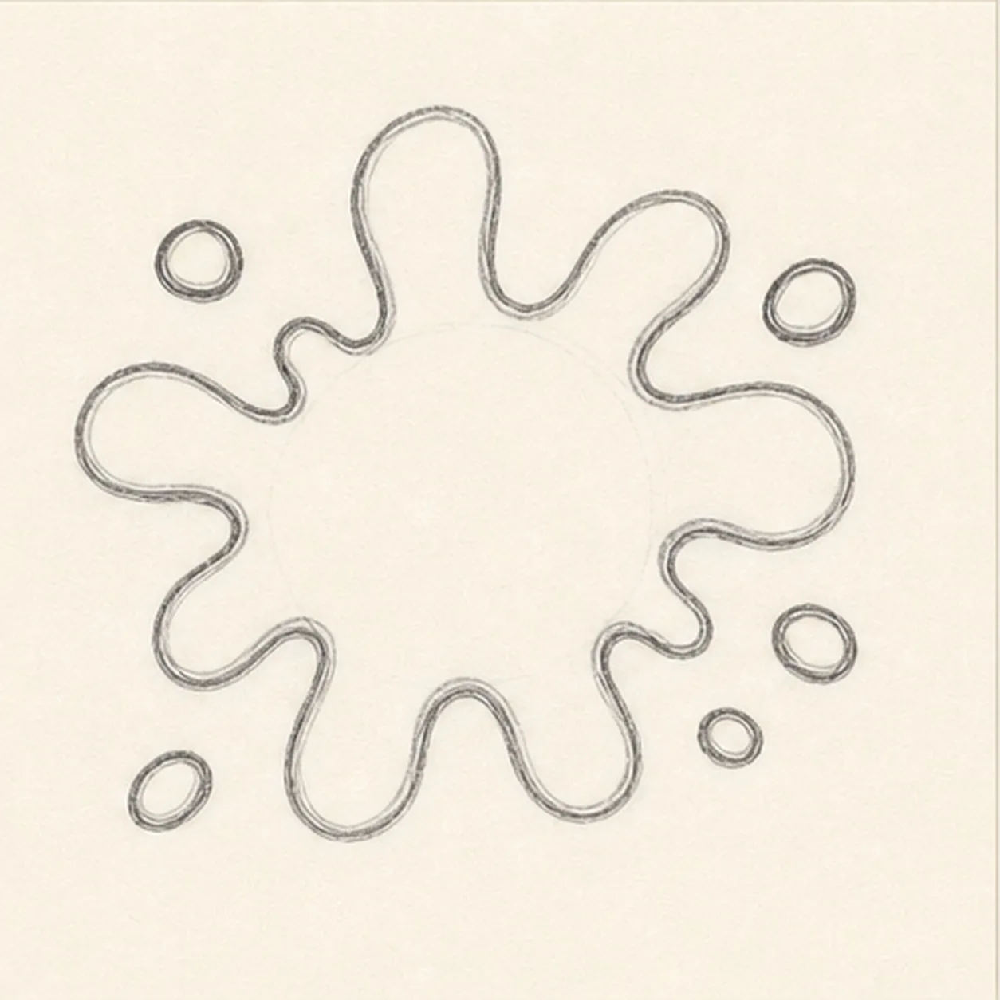
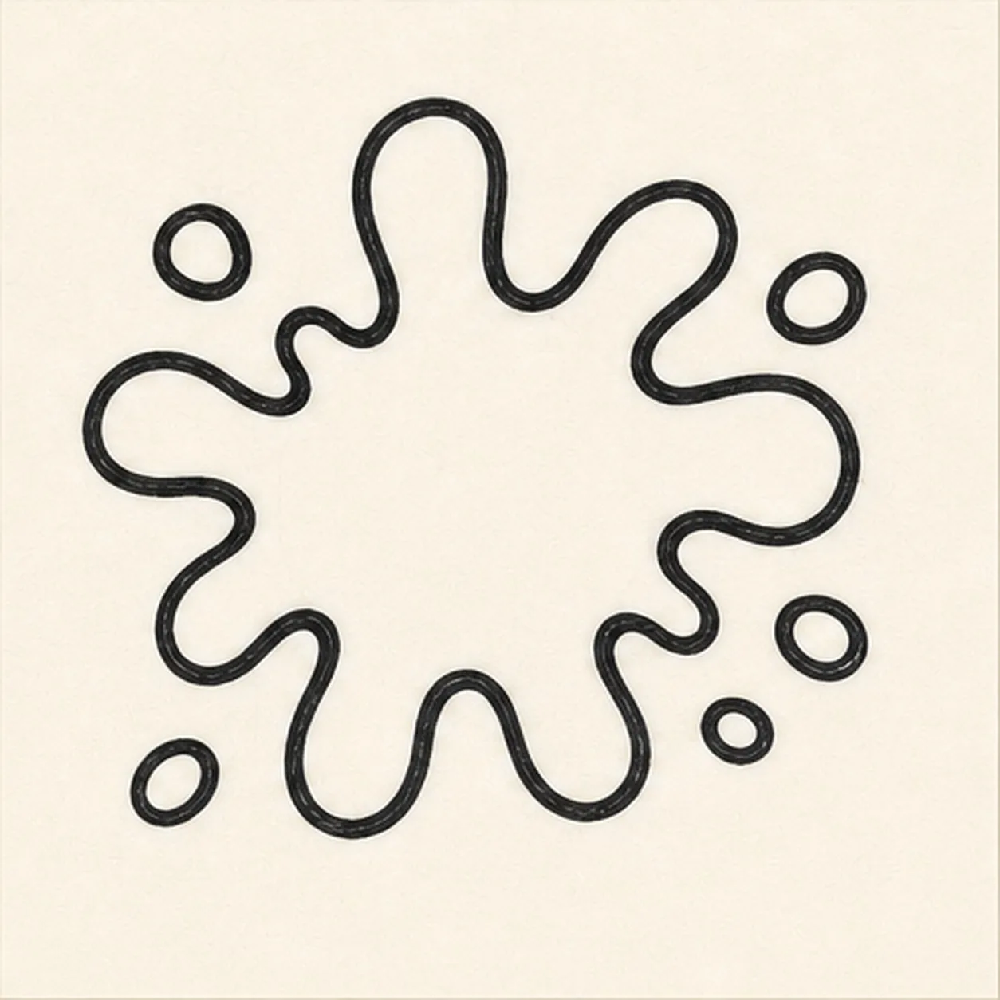
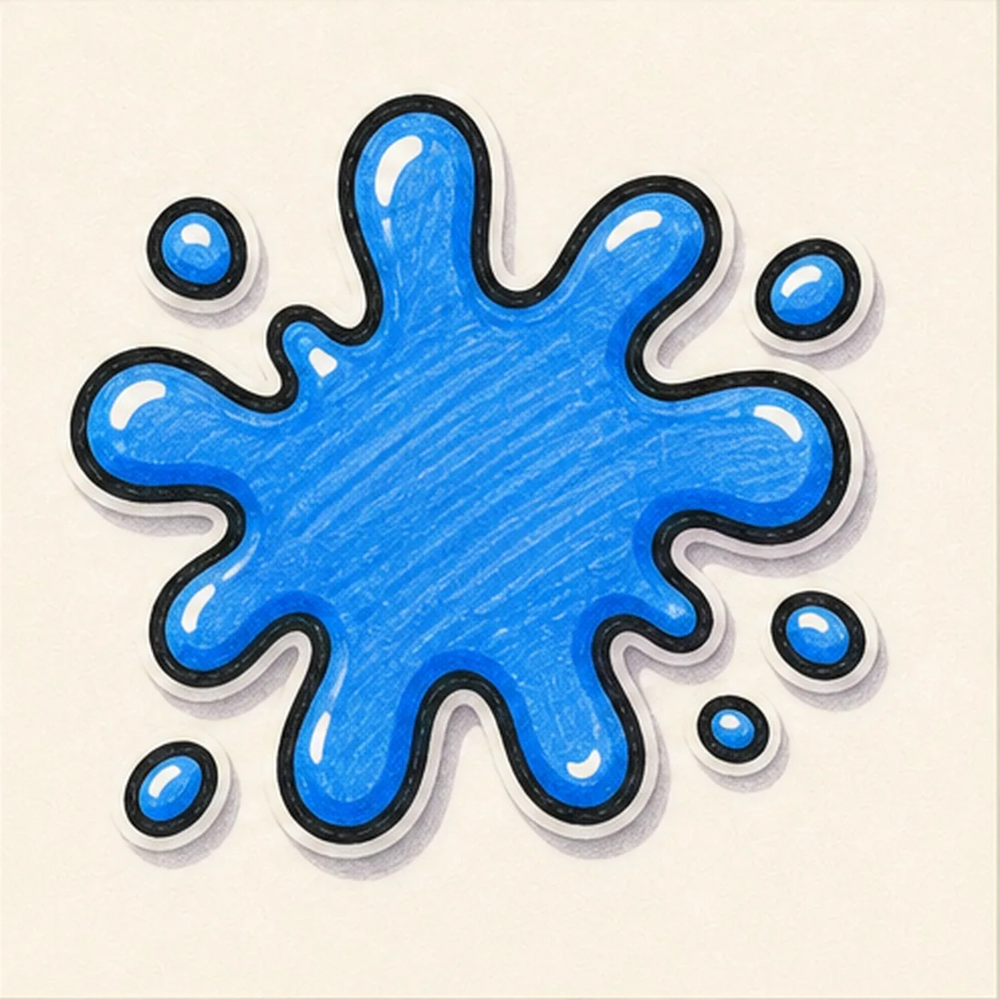

Felt-tip marker mode
Let's doodle a cartoon paint splat
Treat this as one playful practice round: sketch the idea loosely, simplify the shapes, then commit with confident marker outlines and bright fills.
-
01

Start with a blob
Draw a soft rounded blob in the middle of the page as the anchor for the splat.
Doodle tip: This first shape does not need to be perfect. It just gives the splat a center.
-
02

Pull out splat arms
Add uneven arms around the blob, mixing rounded bumps with a few longer stretched shapes.
Doodle tip: Rotate the page if it helps. The arms should feel random but still connect smoothly.
-
03

Drop little dots
Place a few small paint droplets around the main splat, leaving space between them and the center.
Doodle tip: Use different droplet sizes so the splash feels lively instead of patterned.
-
04

Ink the splat edge
Trace the splat and droplets with a thick black marker line, following only the shapes you already drew.
Doodle tip: Do not invent new arms while inking. The marker should make the existing splash bolder.
-
05

Fill the color splash
Fill the splat and droplets with bright marker color, leave small shine gaps, show marker streaks, and add a soft sticker shadow.
Doodle tip: Color in the same direction across the big splat so the streaks feel intentional.
-
06
Make the splat pop
Reinforce the existing outline, clean the marker fill, sharpen the highlights, and deepen the shadow already on the page.
Doodle tip: The finish should still look like the same splash from step five, just louder and cleaner.